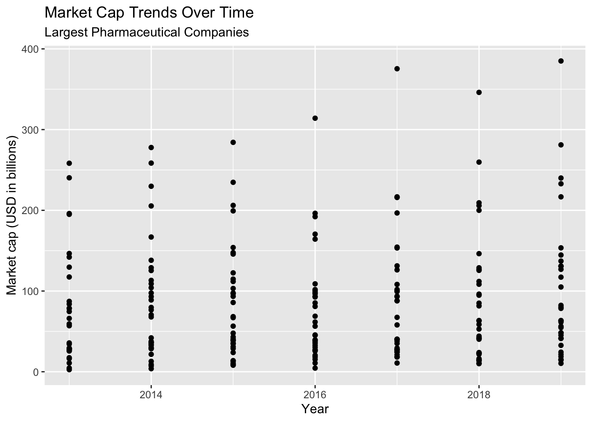
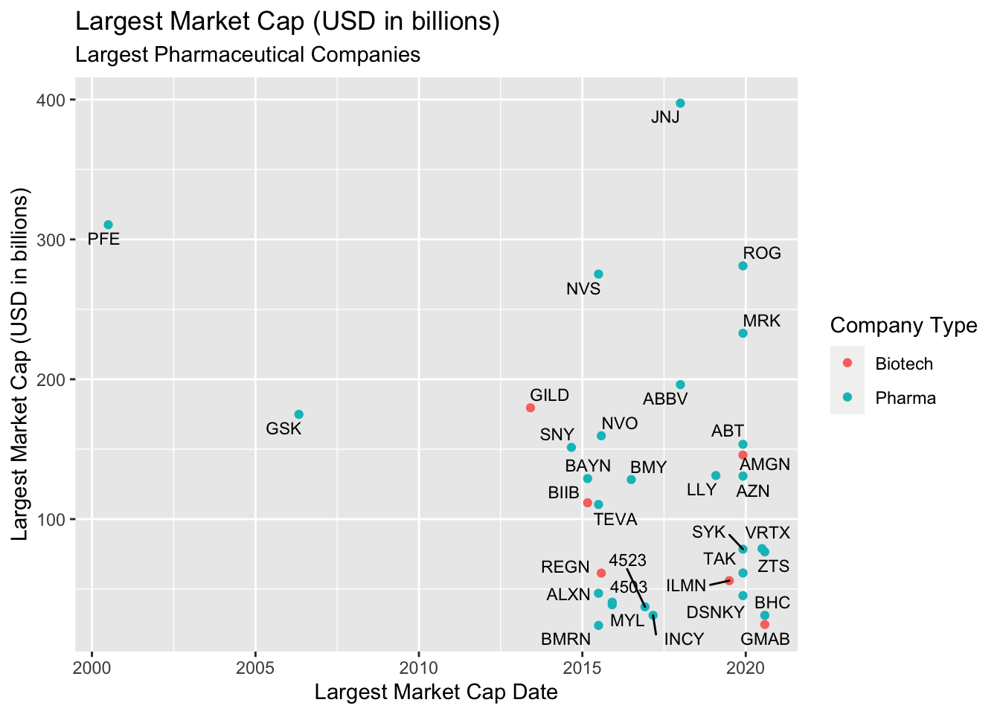
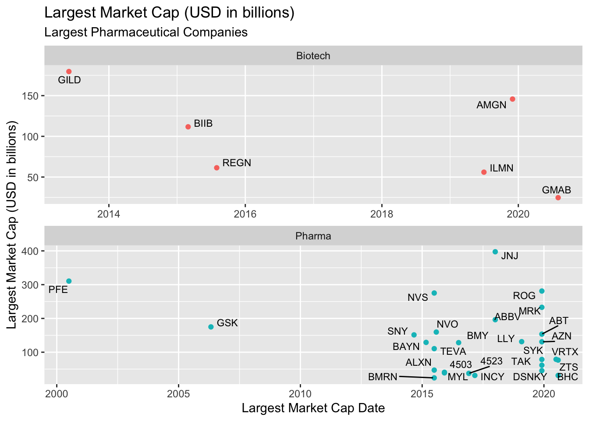
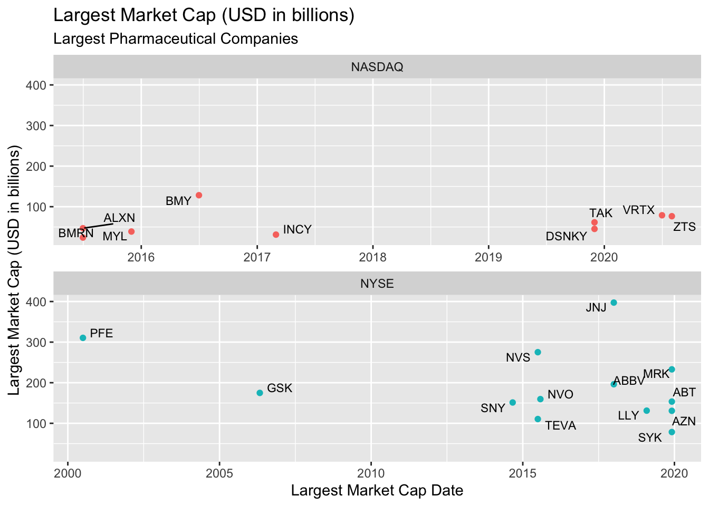
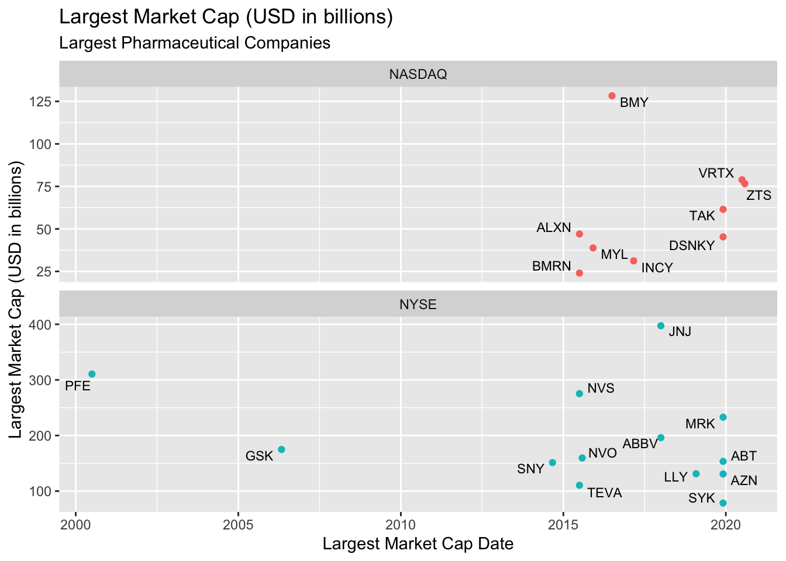
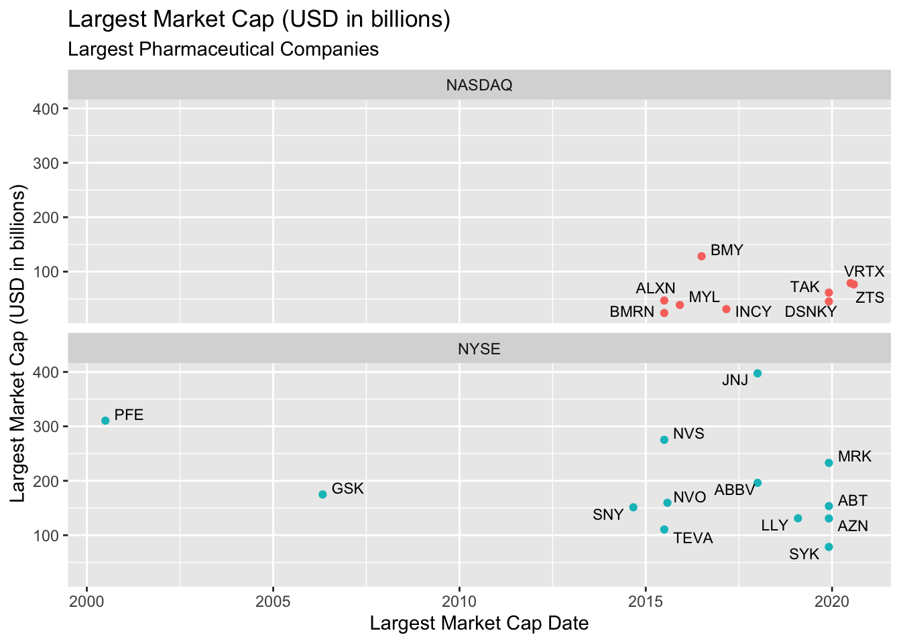

Introduction to Data Visualization with ggplot2
1 Objectives
This document outlines and introduction to data visualization with ggplot2.
2 Materials
The slides for this presentation are here
There is also an accompanying RStudio.Cloud project
3 Previous lessons
All of the exercises and lessons are available here, but you can also read more about dplyr and tidyr on the tidyverse website, and in the Data Transformation and Tidy Data chapters of R for Data Science.
4 Load the packages
The main packages we’re going to use are dplyr, tidyr, and ggplot2. These are all part of the tidyverse, so we’ll import this package below:
install.packages("tidyverse")
library(tidyverse)5 Import data
We will begin by importing the data from the wrangling section. These data come from a wikipedia table on largest biotechnology and pharmaceutical companies.
TopPharmComp <- readr::read_csv(file = "https://bit.ly/3gC67HT")
TopPharmComp %>% glimpse(78)## Rows: 231
## Columns: 10
## $ ranking <dbl> 1, 1, 1, 1, 1, 1, 1, 2, 2, 2, 2, 2, 2, 2,…
## $ company_name <chr> "Johnson & Johnson", "Johnson & Johnson",…
## $ company_type <chr> "Pharma", "Pharma", "Pharma", "Pharma", "…
## $ stock_exch <chr> "NYSE", "NYSE", "NYSE", "NYSE", "NYSE", "…
## $ stock_id <chr> " JNJ", " JNJ", " JNJ", " JNJ", " JNJ", "…
## $ cap_date_original <chr> "Jan 2018", "Jan 2018", "Jan 2018", "Jan …
## $ largest_market_cap_date <date> 2018-01-01, 2018-01-01, 2018-01-01, 2018…
## $ year <dbl> 2019, 2018, 2017, 2016, 2015, 2014, 2013,…
## $ largest_market_cap_us_bil <dbl> 397.4, 397.4, 397.4, 397.4, 397.4, 397.4,…
## $ market_cap_us_bil <dbl> 385.0, 346.1, 375.4, 314.1, 284.2, 277.8,…5.1 Format variables
We can see a few of the variables need to be formatted before we can start visualizing.
TopPharmComp %>%
mutate(
# create factor
ranking = factor(ranking, ordered = TRUE),
# remove whitespace
stock_id = str_trim(string = stock_id, side = "both")) -> TopPharmComp
# get skim
TopPharmComp %>% skimr::skim()| Name | Piped data |
| Number of rows | 231 |
| Number of columns | 10 |
| _______________________ | |
| Column type frequency: | |
| character | 5 |
| Date | 1 |
| factor | 1 |
| numeric | 3 |
| ________________________ | |
| Group variables | None |
Variable type: character
| skim_variable | n_missing | complete_rate | min | max | empty | n_unique | whitespace |
|---|---|---|---|---|---|---|---|
| company_name | 0 | 1 | 5 | 25 | 0 | 33 | 0 |
| company_type | 0 | 1 | 6 | 7 | 0 | 2 | 0 |
| stock_exch | 0 | 1 | 3 | 6 | 0 | 6 | 0 |
| stock_id | 0 | 1 | 3 | 5 | 0 | 33 | 0 |
| cap_date_original | 0 | 1 | 8 | 8 | 0 | 17 | 0 |
Variable type: Date
| skim_variable | n_missing | complete_rate | min | max | median | n_unique |
|---|---|---|---|---|---|---|
| largest_market_cap_date | 0 | 1 | 2000-07-01 | 2020-08-01 | 2017-03-01 | 17 |
Variable type: factor
| skim_variable | n_missing | complete_rate | ordered | n_unique | top_counts |
|---|---|---|---|---|---|
| ranking | 0 | 1 | TRUE | 33 | 1: 7, 2: 7, 3: 7, 4: 7 |
Variable type: numeric
| skim_variable | n_missing | complete_rate | mean | sd | p0 | p25 | p50 | p75 | p100 | hist |
|---|---|---|---|---|---|---|---|---|---|---|
| year | 0 | 1.00 | 2016.00 | 2.00 | 2013.0 | 2014.0 | 2016.0 | 2018.0 | 2019.0 | ▇▃▃▃▇ |
| largest_market_cap_us_bil | 0 | 1.00 | 125.23 | 91.21 | 24.0 | 47.0 | 111.7 | 159.6 | 397.4 | ▇▅▂▂▁ |
| market_cap_us_bil | 2 | 0.99 | 85.68 | 75.07 | 2.6 | 28.7 | 63.2 | 117.2 | 385.0 | ▇▅▁▁▁ |
6 Visualize
We will start by looking at the trends of market_cap_us_bil over time (using year).
6.1 Build the labels first!
I suggest building labels first when making a figure or graph, because it forces us to think about what we should expect to see. For example, if we want to see market_cap_us_bil on the y and market_cap_year on the x, we can create these with a title using the ggplot2::labs() function below.
lab_year_x_mrktcap <- ggplot2::labs(title = "Market Cap Trends Over Time",
subtitle = "Largest Pharmaceutical Companies",
x = "Year", y = "Market cap (USD in billions)")7 Map Variables to Positions
We map variables to positions (x and y) inside the aes() function, either globally inside ggplot() or locally inside a geom().
7.1 Positions
The exercises below are a refresher on mapping variables to aesthetics and picking geoms.
7.1.1 exercise
Map the year to the x and market_cap_us_bil to the y globally and add a geom_point()
TopPharmComp %>%
ggplot(aes(x = __________, y = __________)) +
geom______() +
lab_year_x_mrktcap7.1.2 solution
Check the solution below–what is wrong with this plot?
TopPharmComp %>%
ggplot(aes(x = year, y = market_cap_us_bil)) +
geom_point() +
lab_year_x_mrktcap
7.1.3 exercise
Change the geom to a geom_line(). Does it help?
TopPharmComp %>%
ggplot(aes(x = __________, y = __________)) +
geom_____() +
lab_year_x_mrktcap7.1.4 solution
Check the updated graph below. It’s closer to what we want, but not quite. What do you think the issue is?
TopPharmComp %>%
ggplot(aes(x = year, y = market_cap_us_bil)) +
geom_line() +
lab_year_x_mrktcap
7.1.5 exercise
This time add another aes() inside the geom_line() function, and apply group to company_name.
TopPharmComp %>%
ggplot(aes(x = year, y = market_cap_us_bil)) +
geom_line(aes(_____ = __________)) +
lab_year_x_mrktcap7.1.6 solution
Now the graph is looking how we want! We can see the trend lines are separated according to each company name, but we can’t tell which line is which.
Let’s add some color to see more.
TopPharmComp %>%
ggplot(aes(x = year, y = market_cap_us_bil)) +
geom_line(aes(group = company_name)) +
lab_year_x_mrktcap8 Map Variables to Aesthetics
Aesthetics include visual elements like size, color, and fill.
8.1 Aesthetics
In the previous graph, we were able to get a different line per company. However, we want to identify more about these companies with color.
We know there are 33 levels in company_name, and this is too many to map with color (check this below with distinct())
TopPharmComp %>% distinct(company_name)8.1.1 exercise
Use the stock_exch to color the lines, assign this graph to gg_trend_line
gg_trend_line <- TopPharmComp %>%
ggplot(aes(x = year, y = market_cap_us_bil)) +
geom_line(aes(group = company_name, color = __________)) +
lab_year_x_mrktcap
gg_trend_line8.1.2 solution
This graph is showing us more information that the previous plot. For example, we can see the companies with the best performance are on the NYSE, and those with relatively low performance are on the TSX.
This graph is better then the previous versions, but it still has too much information to be very helpful. For example, we have no idea which line belongs to which company?
gg_trend_line <- TopPharmComp %>%
ggplot(aes(x = year, y = market_cap_us_bil)) +
geom_line(aes(group = company_name, color = stock_exch)) +
lab_year_x_mrktcap
gg_trend_lineIn the next section, we’ll summarize the data a bit more to create different visualizations.
9 Graphing Data Summaries
We’re going to summarize the data in TopPharmComp. Summarizations are helpful when we’re interested in comparing variables across groups.
9.1 Grouped calculations
Whenever we’re grouping by a particular variable (or variables), we need to decide what summary calculation to use. In the section below we will use the mean() function to get the average market cap (in USD in billions).
9.1.1 Graph Labels
We want the TopPharmComp dataset to have one variable per company_name name and stock_exch.
A good measure of central tendency for this is the mean() (or average). First we define the new labels.
lab_avgmrktcap_compname <- ggplot2::labs(title = "Average Market Cap (2013-2019)",
subtitle = "Largest Pharmaceutical Companies",
x = "Average Market cap (USD in billions)",
y = "Company")The code below groups the TopPharmComp data by company_name and stock_exch and summarizes the mean market_cap_us_bil.
TopPharmComp %>%
group_by(company_name, stock_exch) %>%
summarize(
avg_market_cap = mean(market_cap_us_bil, na.rm = TRUE)) %>%
ungroup()This dataset will allow us to show more information per company.
9.1.2 exercise
Complete the code below with the following:
- map
avg_market_capto thexaxis
- map
company_nameto theyaxis - map
stock_exchtofill
TopPharmComp %>%
group_by(company_name, stock_exch) %>%
summarize(
avg_market_cap = mean(market_cap_us_bil, na.rm = TRUE)) %>%
ungroup() %>%
ggplot() +
geom_col(aes(x = _________,
y = __________,
fill = _________)) +
lab_avgmrktcap_compname9.1.3 solution
See below:
TopPharmComp %>%
group_by(company_name, stock_exch) %>%
summarize(
avg_market_cap = mean(market_cap_us_bil, na.rm = TRUE)) %>%
ungroup() %>%
ggplot() +
geom_col(aes(x = avg_market_cap,
y = company_name,
fill = stock_exch)) +
lab_avgmrktcap_compnameThis graph is better because we can see the average performance of the market cap per company. The lines are very unorganized, though. We can use a combination of factor() and forcats::fct_reorder() to fix this.
9.1.4 exercise
Use fct_reorder and factor to reorder avg_market_cap according to company_name
TopPharmComp %>%
group_by(company_name, stock_exch) %>%
summarize(
avg_market_cap = mean(market_cap_us_bil, na.rm = TRUE)) %>%
ungroup() %>%
ggplot() +
geom_col(aes(x = avg_market_cap,
y = fct_reorder(factor(_________), __________),
fill = stock_exch)) +
lab_avgmrktcap_compname9.1.5 solution
See below:
TopPharmComp %>%
group_by(company_name, stock_exch) %>%
summarize(
avg_market_cap = mean(market_cap_us_bil, na.rm = TRUE)) %>%
ungroup() %>%
ggplot() +
geom_col(aes(x = avg_market_cap,
y = fct_reorder(factor(company_name), avg_market_cap),
fill = stock_exch)) +
lab_avgmrktcap_compname9.1.6 exercise
Change the labels below so that the legend is named, "Stock Exchange". Re-build the plot with the new labels and assign this to gg_col_graph.
lab_avgmrktcap_comp_fill <- ggplot2::labs(x = "Company",
y = "Average Market cap (USD in billions)",
title = "Average Market Cap (2013-2019)",
subtitle = "Largest Pharmaceutical Companies",
fill = ___________)
TopPharmComp %>%
group_by(company_name, stock_exch) %>%
summarize(
avg_market_cap = mean(market_cap_us_bil, na.rm = TRUE)) %>%
ungroup() %>%
ggplot() +
geom_col(aes(x = avg_market_cap,
y = fct_reorder(factor(company_name), avg_market_cap),
fill = stock_exch)) +
lab_avgmrktcap_comp_fill -> gg_col_graph
gg_col_graph9.1.7 solution
See below:
lab_avgmrktcap_comp_fill <- ggplot2::labs(x = "Company",
y = "Average Market cap (USD in billions)",
title = "Average Market Cap (2013-2019)",
subtitle = "Largest Pharmaceutical Companies",
fill = "Stock Exchange")
TopPharmComp %>%
group_by(company_name, stock_exch) %>%
summarize(
avg_market_cap = mean(market_cap_us_bil, na.rm = TRUE)) %>%
ungroup() %>%
ggplot() +
geom_col(aes(x = avg_market_cap,
y = fct_reorder(factor(company_name), avg_market_cap),
fill = stock_exch)) +
lab_avgmrktcap_comp_fill -> gg_col_graph
gg_col_graph10 Labelling Values
We’re going to focus on the Largest Market Cap (largest_market_cap_us_bil) and Largest Market Cap Date (largest_market_cap_date) variables.
10.1 Scatter plot
First we are going to build a scatter plot (geom_point()) of Largest Market Cap over time.
10.1.1 Graph lables
We will define a new set of labels below.
lab_lrg_mrkt_cap_trend <- labs(title = "Largest Market Cap (USD in billions)",
subtitle = "Largest Pharmaceutical Companies",
x = "Largest Market Cap Date",
y = "Largest Market Cap (USD in billions)",
color = "Company Type")10.1.2 exercise
select() the stock_exch, stock_id, company_type, largest_market_cap_date, and largest_market_cap_us_bil variables and get the distinct() values. Assign this to TopPharmComCaps.
TopPharmComCaps <- TopPharmComp %>%
select(_________, _________, _________,
_________, _________) %>%
dplyr::distinct()10.1.3 solution
See below:
TopPharmComCaps <- TopPharmComp %>%
select(stock_exch, stock_id, company_type,
largest_market_cap_date, largest_market_cap_us_bil) %>%
dplyr::distinct()
TopPharmComCaps10.1.4 exercise
Use TopPharmComCaps to create a scatter plot with largest_market_cap_date to the x axis, and largest_market_cap_us_bil to the y. Color the points by company_type.
TopPharmComCaps %>%
ggplot() +
geom_point(aes(x = _____________,
y = _____________,
color = _____________)) +
lab_lrg_mrkt_cap_trend10.1.5 solution
We can see this plot is showing us the date they reached their Largest Market Cap, and the date they reached it. But we still can’t see which company is which.
TopPharmComCaps %>%
ggplot() +
geom_point(aes(x = largest_market_cap_date,
y = largest_market_cap_us_bil,
color = company_type)) +
lab_lrg_mrkt_cap_trend
10.2 Adding text labels
We’re going to add text labels to each data point. This is as simple as adding another layer to our previous plot! We just need to identify the proper geom, then map the variables to their aesthetics.
10.2.1 exercise
Add another layer to the plot above using geom_text()
- map
largest_market_cap_dateto thex
- map
largest_market_cap_us_bilto they
- map
stock_idtolabel - set
sizeto3(outsideaes())
TopPharmComCaps %>%
ggplot() +
geom_point(aes(x = largest_market_cap_date,
y = largest_market_cap_us_bil,
color = company_type)) +
geom_text(aes(x = _____________,
y = _____________,
label = _____________), size = _) +
lab_lrg_mrkt_cap_trend10.2.2 solution
We can see this plot has labeled each company on their data-point, so we can clearly see the date they reached their Largest Market Cap in comparison to other companies. The labels are hard to see, though. We can try to adjust this with size, but fortunately there is a package specifically designed to help with text labels.
TopPharmComCaps %>%
ggplot() +
geom_point(aes(x = largest_market_cap_date,
y = largest_market_cap_us_bil,
color = company_type)) +
geom_text(aes(x = largest_market_cap_date,
y = largest_market_cap_us_bil,
label = stock_id), size = 3) +
lab_lrg_mrkt_cap_trend
10.2.3 exercise
Use the ggrepel package to adjust the labels.
- Map
stock_idtogeom_text_repel()
library(ggrepel)
TopPharmComCaps %>%
ggplot(aes(x = largest_market_cap_date,
y = largest_market_cap_us_bil)) +
geom_point(aes(color = company_type)) +
geom_text_repel(aes(label = __________), size = 3) +
lab_lrg_mrkt_cap_trend 10.2.4 solution
Now the labels for each company are easier to see! However, this is still a very busy graph. We probably don’t want label all the points on the scatter plot. We will cover more advanced uses of text annotations in the next section.
library(ggrepel)
TopPharmComCaps %>%
ggplot(aes(x = largest_market_cap_date,
y = largest_market_cap_us_bil)) +
geom_point(aes(color = company_type)) +
geom_text_repel(aes(label = stock_id), size = 3) +
lab_lrg_mrkt_cap_trend 
11 Facetting
In the next few exercises we’re going to see how to use facets to explore values across different levels and scales. Facets show subplots for different levels of a grouping variable.
11.1 Scales
We’re going to build a few graphs using facet_wrap(). Each exercise uses a different setting for the scales argument.
11.1.1 exercise
Use facet_wrap() to split the graphs by company_type
- set the
scalesargument to"free"andnrowto2.
TopPharmComCaps %>%
ggplot(aes(x = largest_market_cap_date,
y = largest_market_cap_us_bil)) +
geom_point(aes(color = company_type), show.legend = FALSE) +
geom_text_repel(aes(label = stock_id), size = 3) +
facet_wrap(. ~ company_type, scales = ______, nrow = _) +
lab_lrg_mrkt_cap_trend 11.1.2 solution
This creates two graphs–one for each level of company_type. Why would setting the scales to "free" be an issue?
It makes it difficult to compare points (i.e. companies) when they don’t share common axes.
TopPharmComCaps %>%
ggplot(aes(x = largest_market_cap_date,
y = largest_market_cap_us_bil)) +
geom_point(aes(color = company_type), show.legend = FALSE) +
geom_text_repel(aes(label = stock_id), size = 3) +
facet_wrap(. ~ company_type, scales = "free", nrow = 2) +
lab_lrg_mrkt_cap_trend 
11.1.3 exercise
Change the scales argument to "free_x" and rebuild the graph above.
TopPharmComCaps %>%
filter(stock_exch %in% c("NASDAQ", "NYSE"),
company_type == "Pharma") %>%
ggplot(aes(x = largest_market_cap_date,
y = largest_market_cap_us_bil)) +
geom_point(aes(color = stock_exch), show.legend = FALSE) +
geom_text_repel(aes(label = stock_id), size = 3) +
facet_wrap(. ~ stock_exch, scales = ______, nrow = 2) +
lab_lrg_mrkt_cap_trend 11.1.4 solution
This fixes the y axis, but allows the x to adjust according to the data. Now the data are comparable in terms of the y axis, but over different time-frames (along the x axis).
TopPharmComCaps %>%
filter(stock_exch %in% c("NASDAQ", "NYSE"),
company_type == "Pharma") %>%
ggplot(aes(x = largest_market_cap_date,
y = largest_market_cap_us_bil)) +
geom_point(aes(color = stock_exch), show.legend = FALSE) +
geom_text_repel(aes(label = stock_id), size = 3) +
facet_wrap(. ~ stock_exch, scales = "free_x", nrow = 2) +
lab_lrg_mrkt_cap_trend 
11.1.5 exercise
Change the scales argument to "free_y" and rebuild the graph.
TopPharmComCaps %>%
filter(stock_exch %in% c("NASDAQ", "NYSE"),
company_type == "Pharma") %>%
ggplot(aes(x = largest_market_cap_date,
y = largest_market_cap_us_bil)) +
geom_point(aes(color = stock_exch), show.legend = FALSE) +
geom_text_repel(aes(label = stock_id), size = 3) +
facet_wrap(. ~ stock_exch, scales = ________, nrow = 2) +
lab_lrg_mrkt_cap_trend11.1.6 solution
Now we have a fixed x axis, and the y axis can adjust according to the data. This presents a similar dilemma–we can compare the time-frames, but the y axes are misleading.
TopPharmComCaps %>%
filter(stock_exch %in% c("NASDAQ", "NYSE"),
company_type == "Pharma") %>%
ggplot(aes(x = largest_market_cap_date,
y = largest_market_cap_us_bil)) +
geom_point(aes(color = stock_exch), show.legend = FALSE) +
geom_text_repel(aes(label = stock_id), size = 3) +
facet_wrap(. ~ stock_exch, scales = "free_y", nrow = 2) +
lab_lrg_mrkt_cap_trend 
11.1.7 Common axes
This is why it’s preferable to keep both the x and y axes identical whenever we use facets. See below:
TopPharmComCaps %>%
filter(stock_exch %in% c("NASDAQ", "NYSE"),
company_type == "Pharma") %>%
ggplot(aes(x = largest_market_cap_date,
y = largest_market_cap_us_bil)) +
geom_point(aes(color = stock_exch), show.legend = FALSE) +
geom_text_repel(aes(label = stock_id), size = 3) +
facet_wrap(. ~ stock_exch, nrow = 2) +
lab_lrg_mrkt_cap_trend 
12 Recap
These exercises have covered:
- Build the labels first!
- Mapping variables to position
aes()is used to map variables toxandypositions
- Mapping variables to aesthetics
aes()is used to map variables tocolor,fill, etc.
- Graphing data summaries
- Use data wrangling pipelines to pass
data.frames toggplot2functions
- Labeling data points (with layers)
- add labels with
geom_text()andggrepellayers
- Using
facets to explore graphs across different scales for thexandyaxes